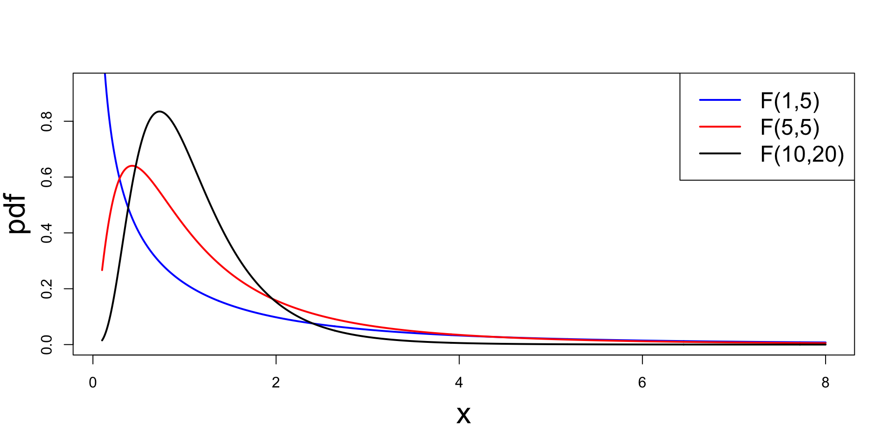
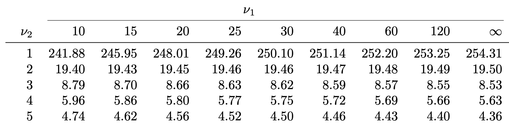

Lecture 5: Two-sample F-test & Goodness-of-fit test
Outline of Lecture 5
The F-distribution
Two-sample F-test
Worked Example
The goodness-of-fit test
Worked Examples
Part 1: The F-distribution
Recall
The chi-squared distribution with p degrees of freedom is
\chi_p^2 = Z_1^2 + \ldots + Z_p^2 \qquad \text{where} \qquad Z_1, \ldots, Z_n \,\,\, \text{iid} \,\,\, N(0, 1)
Chi-squared distribution was used to:
Describe distribution of sample variance S^2:
\frac{(n-1)S^2}{\sigma^2} \sim \chi_{n-1}^2
Define t-distribution with p degrees of freedom:
t_p \sim \frac{U}{\sqrt{V/p}} \qquad \text{where} \qquad
U \sim N(0,1) \,, \quad V \sim \chi_p^2 \quad \text{ independent}
The F-distribution
Definition
The r.v. F has F-distribution with p and q degrees of freedom if the pdf is
f_F(x) = \frac{ \Gamma \left(\frac{p+q}{2} \right) }{ \Gamma \left( \frac{p}{2} \right) \Gamma \left( \frac{q}{2} \right) }
\left( \frac{p}{q} \right)^{p/2} \,
\frac{ x^{ (p/2) - 1 } }{ [ 1 + (p/q) x ]^{(p+q)/2} } \,, \quad x > 0
Notation: F-distribution with p and q degrees of freedom is denoted by F_{p,q}
Remark: Used to describes variance estimators for independent samples
Plot of F-distributions

Characterization of F-distribution
The F-distribution is obtained as ratio of 2 independent chi-squared distributions
Theorem
Suppose that U \sim \chi_p^2 and V \sim \chi_q^2 are independent. Then
X := \frac{U/p}{V/q} \sim F_{p,q}
Idea of Proof
This is similar to the proof (seen in Homework 2) that
\frac{U}{\sqrt{V/p}} \sim t_p
where U \sim N(0,1) and V \sim \chi_p^2 are independent
In our case we need to prove
X := \frac{U/p}{V/q} \sim F_{p,q}
where U \sim \chi_p^2 and V \sim \chi_q^2 are independent
Consider the change of variables
x(u,v) := \frac{u/p}{v/q} \,, \quad y(u,v) := u + v
Idea of Proof
This way we have
X = \frac{U/p}{V/q} \,, \qquad Y = U + V
To conclude the proof, we need to compute the pdf of X, that is f_X
This can be computed as the X marginal of f_{X,Y}
f_{X}(x) = \int_{0}^\infty f_{X,Y}(x,y) \, dy
Idea of Proof
The joint pdf f_{X,Y} can be computed by inverting the change of variables
x(u,v) := \frac{u/p}{v/q} \,, \quad y(u,v) := u + v
and using the formula
f_{X,Y}(x,y) = f_{U,V}(u(x,y),v(x,y)) \, |\det J|
where J is the Jacobian of the inverse transformation
(x,y) \mapsto (u(x,y),v(x,y))
Idea of Proof
Since f_{U,V} is known, then also f_{X,Y} is known
Moreover the integral
f_{X}(x) = \int_{0}^\infty f_{X,Y}(x,y) \, dy
can be explicitly computed, yielding the thesis
f_{X}(x) = \frac{ \Gamma \left(\frac{p+q}{2} \right) }{ \Gamma \left( \frac{p}{2} \right) \Gamma \left( \frac{q}{2} \right) }
\left( \frac{p}{q} \right)^{p/2} \,
\frac{ x^{ (p/2) - 1 } }{ [ 1 + (p/q) x ]^{(p+q)/2} }
Properties of F-distribution
Theorem
Suppose X \sim F_{p,q} with q>2. Then
{\rm I\kern-.3em E}[X] = \frac{q}{q-2}
If X \sim F_{p,q} then 1/X \sim F_{q,p}
If X \sim t_q then X^2 \sim F_{1,q}
Properties of F-distribution
Proof of Theorem
Requires a bit of work (omitted)
By the Theorem in Slide 6, we have
X \sim F_{p,q} \quad \implies \quad X = \frac{U/p}{V/q}
with U \sim \chi_p^2 and V \sim \chi_q^2 independent. Therefore
\frac{1}{X} = \frac{V/q}{U/p} \sim \frac{\chi^2_q/q}{\chi^2_p/p} \sim F_{q,p}
Properties of F-distribution
Proof of Theorem
Suppose X \sim t_q. The Theorem in Slide 118 of Lecture 2, guarantees that
X = \frac{U}{\sqrt{V/q}}
where U \sim N(0,1) and V \sim \chi_q^2 are independent. Therefore
X^2 = \frac{U^2}{V/q}
Properties of F-distribution
Proof of Theorem
Since U \sim N(0,1), by definition U^2 \sim \chi_1^2.
Moreover U^2 and V are independet, since U and V are independent
Finally, the Theorem in Slide 6 implies
X^2 = \frac{U^2}{V/q} \sim \frac{\chi_1^2/1}{\chi_q^2/q} \sim F_{1,q}
Part 2: Two-sample F-test
Variance estimators
Suppose given independent random samples from 2 normal populations:
X_1, \ldots, X_n iid random sample from N(\mu_X, \sigma_X^2)
Y_1, \ldots, Y_m iid random sample from N(\mu_Y, \sigma_Y^2)
Problem:
We want to compare variance of the 2 populations
We do it by studying the variances ratio
\frac{\sigma_X^2}{\sigma_Y^2}
Variance estimators
Question:
Suppose the variances \sigma_X^2 and \sigma_Y^2 are unknown
How can we estimate the ratio \sigma_X^2 /\sigma_Y^2 \, ?
Answer:
Estimate the ratio \sigma_X^2 /\sigma_Y^2 \, using sample variances
S^2_X / S^2_Y
The F-distribution allows to compare the quantities
\sigma_X^2 /\sigma_Y^2 \qquad \text{and} \qquad S^2_X / S^2_Y
Variance ratio distribution
Theorem
Suppose given independent random samples from 2 normal populations:
X_1, \ldots, X_n iid random sample from N(\mu_X, \sigma_X^2)
Y_1, \ldots, Y_m iid random sample from N(\mu_Y, \sigma_Y^2)
The random variable
F = \frac{ S_X^2 / \sigma_X^2 }{ S_Y^2 / \sigma_Y^2 } \, \sim \, F_{n-1,m-1}
that is, F is F-distributed with n-1 and m-1 degrees of freedom
Variance ratio distribution
Proof
We need to prove
F = \frac{ S_X^2 / \sigma_X^2 }{ S_Y^2 / \sigma_Y^2 } \sim F_{n-1,m-1}
By the Theorem in Slide 101 Lecture 2, we have that
\frac{S_X^2}{ \sigma_X^2} \sim \frac{\chi_{n-1}^2}{n-1} \,, \qquad
\frac{S_Y^2}{ \sigma_Y^2} \sim \frac{\chi_{m-1}^2}{m-1}
Variance ratio distribution
Proof
Therefore
F = \frac{ S_X^2 / \sigma_X^2 }{ S_Y^2 / \sigma_Y^2 } = \frac{U/p}{V/q}
where we have
U \sim \chi_{p}^2 \,, \qquad
V \sim \chi_q^2 \,, \qquad
p = n-1 \,, \qquad
q = m - 1
By the Theorem in Slide 6, we infer the thesis
F = \frac{U/p}{V/q} \sim F_{n-1,m-1}
Unbiased estimation of variance ratio
Question: Why is S_X^2/S_Y^2 a good estimator for \sigma_X^2/\sigma_Y^2
Answer:
Because S_X^2/S_Y^2 is (asymptotically) unbiased estimator of \sigma_X^2/\sigma_Y^2
This is shown in the following Theorem
Unbiased estimation of variance ratio
Theorem
Suppose given independent random samples from 2 normal populations:
X_1, \ldots, X_n iid random sample from N(\mu_X, \sigma_X^2)
Y_1, \ldots, Y_m iid random sample from N(\mu_Y, \sigma_Y^2)
The hypotheses for difference in variance are
H_0 \colon \sigma_X^2 = \sigma_Y^2 \,, \quad \qquad
H_1 \colon \sigma_X^2 \neq \sigma_Y^2 \quad \text{ or } \quad
H_1 \colon \sigma_X^2 > \sigma_Y^2
Very important: We only consider two-sided and right-tailed hypotheses
This is because we can always label the samples in a way that s_X^2 \geq s_Y^2
Therefore, there is no reason to suspect that \sigma_X^2 < \sigma_Y^2
This allows us to work only with upper quantiles
(and avoid a lot of trouble, as the F-distribution is asymmetric)
Procedure: 3 Steps
Calculation: Compute the two-sample F-statistic
F = \frac{ s_X^2}{ s_Y^2}
where sample variances are
s_X^2 = \frac{\sum_{i=1}^n x_i^2 - n \overline{x}^2}{n-1}
\qquad \quad
s_Y^2 = \frac{\sum_{i=1}^m y_i^2 - m \overline{y}^2}{m-1}
Very important:s_X^2 refers to the sample with largest variance
\implies \quad s_X^2 \geq s_Y^2 \,, \qquad F \geq 1
Table 4: Lists the values F_{\nu_1,\nu_2}(0.025), which means
P(X > F_{\nu_1,\nu_2}(0.025)) = 0.025 \,, \qquad \text{ when } \quad X \sim F_{\nu_1,\nu_2}
For example F_{9, 6}(0.025) = 5.52
What about missing values?
Sometimes the value F_{\nu_1,\nu_2}(\alpha) is missing from F-table
In such case approximate F_{\nu_1,\nu_2}(\alpha) with average of closest entries available

Example:F_{21,5}(0.05) is missing. We can approximate it by
F_{21,5}(0.05) \approx \frac{F_{20,5}(0.05) + F_{25,5}(0.05)}{2} = \frac{ 4.56 + 4.52 }{ 2 } = 4.54
The two-sample F-test in R
Store the samples x_1,\ldots,x_n and y_1,\ldots,y_m in two R vectors
x <- c(x1, ..., xn)
y <- c(y1, ..., ym)
Perform a two-sample F-test on x and y
Alternative
R command
\sigma_X^2 \neq \sigma_Y^2
var.test(x, y)
\sigma_X^2 > \sigma_Y^2
var.test(x, y, alt = "greater")
Read output: similar to two-sample t-test
The main quantity of interest is p-value
Part 3: Worked Example
Data: Wages of 10 Mathematicians and 13 Accountants (again!)
Assumptions: Wages are independent and normally distributed
Mathematicians
36
40
46
54
57
58
59
60
62
63
Accountants
37
37
42
44
46
48
54
56
59
60
60
64
64
Last week, we conducted a two-sample t-test for equality of means
H_0 \colon \mu_X = \mu_Y \,, \qquad
H_1 \colon \mu_X \neq \mu_Y
We concluded that there is no evidence (p>0.05) of difference in pay levels
However, the two-sample t-test assumed equal variance
\sigma_X^2 = \sigma_Y^2
We checked this assumption by plotting the estimated sample distributions
View the R Code
# Enter the Wages datamathematicians <-c(36, 40, 46, 54, 57, 58, 59, 60, 62, 63)accountants <-c(37, 37, 42, 44, 46, 48, 54, 56, 59, 60, 60, 64, 64)# Compute the estimated distributionsd.math <-density(mathematicians)d.acc <-density(accountants)# Plot the estimated distributionsplot(d.math, # Plot d.mathxlim =range(c(d.math$x, d.acc$x)), # Set x-axis rangeylim =range(c(d.math$y, d.acc$y)), # Set y-axis rangemain ="Estimated Distributions of Wages") # Add title to plotlines(d.acc, # Layer plot of d.acclty =2) # Use different line stylelegend("topleft", # Add legend at top-leftlegend =c("Mathematicians", # Labels for legend"Accountants"), lty =c(1, 2)) # Assign curves to legend
The plot shows that the two populations have similar variance (spread)
Thanks to the F-test, we can now compare variances in a quantitative way
Setting up the F-test
We want to test for equality of the two variances
There is no prior reason to believe that pay in one group is more spread out
Therefore, a two-sided test is appropriate
H_0 \colon \sigma_X^2 = \sigma_Y^2 \,, \qquad
H_1 \colon \sigma_X^2 \neq \sigma_Y^2
First task is to compute the F-statistic
F = \frac{s_X^2}{s_Y^2}
Important: We need to make sure the samples are labelled so that
s_X^2 \geq s_Y^2
1. Calculation
Variance of first sample (Already done last week!)
There is no evidence (p > 0.05) in favor of H_1. We have no reason to doubt that
\sigma_X^2 = \sigma_Y^2
Conclusion:
Wage levels for the two groups appear to be equally well spread out
This is in line with previous graphical checks
The F-test in R
We present two implementations in R:
Simple solution using the command var.test
A first-principles construction closer to our earlier hand calculation
Simple solution: var.test
This is a two-sided F-test. The p-value is computed by
p = 2 P(F_{m-1, n-1} > F) \,, \qquad F = \frac{s_Y^2}{s_X^2}
# Enter Wages data in 2 vectors using function c()mathematicians <-c(36, 40, 46, 54, 57, 58, 59, 60, 62, 63)accountants <-c(37, 37, 42, 44, 46, 48, 54, 56, 59, 60, 60, 64, 64)# Perform two-sided F-test using var.test# Store result and printans <-var.test(accountants, mathematicians)print(ans)
Note: accountants goes first because it has larger variance
F test to compare two variances
data: accountants and mathematicians
F = 1.0607, num df = 12, denom df = 9, p-value = 0.9505
alternative hypothesis: true ratio of variances is not equal to 1
95 percent confidence interval:
0.2742053 3.6443547
sample estimates:
ratio of variances
1.060686
Comments:
First line: R tells us that an F-test is performed
Second line: Data for F-test is accountants and mathematicians
The F-statistic computed is F = 1.0607
Note: This coincides with the one computed by hand (up to rounding error)
F test to compare two variances
data: accountants and mathematicians
F = 1.0607, num df = 12, denom df = 9, p-value = 0.9505
alternative hypothesis: true ratio of variances is not equal to 1
95 percent confidence interval:
0.2742053 3.6443547
sample estimates:
ratio of variances
1.060686
Comments:
Numerator of F-statistic has 12 degrees of freedom
Denominator of F-statistic has 9 degrees of freedom
p-value is p = 0.9505
F test to compare two variances
data: accountants and mathematicians
F = 1.0607, num df = 12, denom df = 9, p-value = 0.9505
alternative hypothesis: true ratio of variances is not equal to 1
95 percent confidence interval:
0.2742053 3.6443547
sample estimates:
ratio of variances
1.060686
Comments:
Fourth line: The alternative hypothesis is that ratio of variances is \, \neq 1
This translates to H_1 \colon \sigma_Y^2 \neq \sigma^2_X
Warning: This is not saying to reject H_0 – R is just stating H_1
F test to compare two variances
data: accountants and mathematicians
F = 1.0607, num df = 12, denom df = 9, p-value = 0.9505
alternative hypothesis: true ratio of variances is not equal to 1
95 percent confidence interval:
0.2742053 3.6443547
sample estimates:
ratio of variances
1.060686
Comments:
Fifth line: R computes a 95 \% confidence interval for ratio \sigma_Y^2/\sigma_X^2
(\sigma_Y^2/\sigma_X^2 ) \in [0.2742053, 3.6443547]
Interpretation: If you repeat the experiment (on new data) over and over, the interval will contain \sigma_Y^2/\sigma_X^2 about 95\% of the times
F test to compare two variances
data: accountants and mathematicians
F = 1.0607, num df = 12, denom df = 9, p-value = 0.9505
alternative hypothesis: true ratio of variances is not equal to 1
95 percent confidence interval:
0.2742053 3.6443547
sample estimates:
ratio of variances
1.060686
Comments:
Seventh line: R computes ratio of sample variances
We have that s_Y^2/s_X^2 = 1.060686
By definition, the above coincides with the F-statistic (up to rounding)
F test to compare two variances
data: accountants and mathematicians
F = 1.0607, num df = 12, denom df = 9, p-value = 0.9505
alternative hypothesis: true ratio of variances is not equal to 1
95 percent confidence interval:
0.2742053 3.6443547
sample estimates:
ratio of variances
1.060686
Conclusion: The p-value is p = 0.9505
Since p > 0.05, we do not reject H_0
Hence \sigma^2_X and \sigma^2_Y appear to be similar
Wage levels for the two groups appear to be equally well spread out
First principles solution
Start by entering data into R
# Enter Wages data in 2 vectors using function c()mathematicians <-c(36, 40, 46, 54, 57, 58, 59, 60, 62, 63)accountants <-c(37, 37, 42, 44, 46, 48, 54, 56, 59, 60, 60, 64, 64)
First principles solution
Check which population has higher variance
In our case accountants has higher variance
# Check which variance is highercat("\n Variance of accountants is", var(accountants))cat("\n Variance of mathematicians is", var(mathematicians))
Note: The p-value coincides with the one obtained with var.test
This is a way to cross check our code is right
Since p > 0.05, we do not rejectH_0
Part 4: The goodness-of-fit test
Scenario 1: Simple counts
Data: in the form of numerical counts
Test: difference between observed counts and predictions of theoretical model
Example: Blood counts
We conducted blood type testing on a sample of 6004 individuals, and the results are summarized below.
A
B
AB
O
2162
738
228
2876
We want to compare the above data to the theoretical probability model
A
B
AB
O
1/3
1/8
1/24
1/2
Scenario 2: Counts with multiple factors
Manager
Won
Drawn
Lost
Moyes
27
9
15
Van Gaal
54
25
24
Mourinho
84
32
28
Solskjaer
91
37
40
Rangnick
11
10
8
ten Hag
61
12
28
Example: Relative performance of Manchester United managers
Each football manager has Win, Draw and Loss count
Scenario 2: Counts with multiple factors
Manager
Won
Drawn
Lost
Moyes
27
9
15
Van Gaal
54
25
24
Mourinho
84
32
28
Solskjaer
91
37
40
Rangnick
11
10
8
ten Hag
61
12
28
Questions:
Is the number of Wins, Draws and Losses uniformly distributed?
Are there differences between the performances of each manager?
Plan
In this Lecture:
We study Scenario 1 – Simple counts
Chi-squared goodness-of-fit test
Next week:
We will study Scenario 2 – Counts with multiple factors
Chi-squared test of independence
Categorical Data
Finite number of possible categories or types
Observations can only belong to one category
O_i refers to observed count of category i
Type 1
Type 2
\ldots
Type n
O_1
O_2
\ldots
O_n
E_i refers to expected count of category i
Type 1
Type 2
\ldots
Type n
E_1
E_2
\ldots
E_n
Chi-squared goodness-of-fit test
Goal: Compare expected counts E_i with observed counts O_i
Null hypothesis: Expected counts match the Observed counts
H_0 \colon O_i = E_i \,, \qquad \forall \, i = 1, \ldots, n
Method: Look for evidence against the null hypothesis
Distance between observed counts and expected counts is large
For example, if
(O_i - E_i)^2 \geq c
for some chosen constant c
Chi-squared statistic
Definition
The chi-squared statistic is
\chi^2 := \sum_{i=1}^n \frac{(O_i-E_i)^2}{E_i}
Remark:
\chi^2 represents the global distance between observed and expected counts
Indeed, we have that
\chi^2 = 0 \qquad \iff \qquad O_i = E_i \,\,\,\, \text{ for all } \,\,\,\, i = 1 , \, \ldots , \, n
Tests using Chi-squared statistic
Null hypothesis: Expected counts match the Observed counts
H_0 \colon O_i = E_i \,, \qquad \forall \, i = 1, \ldots, n
Remarks:
If H_0 is to be believed, we expect small differences between O_i and E_i
Therefore \chi^2 will be small (and non-negative)
If H_0 is wrong, it will happen that some O_i are larger than the E_i
Therefore \chi^2 will be large (and non-negative)
The above imply that tests on \chi^2 should be one-sided (right-tailed)
The Multinomial distribution
Models the following experiment
The experiment consists of m independent trials
Each trial results in one of n distinct possible outcomes
The probability of the i-th outcome is p_i on every trial, with
0 \leq p_i \leq 1 \qquad \qquad \sum_{i=1}^n p_i = 1
X_i counts the number of times i-th outcome occurred in the m trials. It holds
\sum_{i=1}^n X_i = m
Multinomial distribution
Schematic visualization
Outcome type
1
\ldots
n
Total
Counts
X_1
\ldots
X_n
X_1 + \ldots + X_n = m
Probabilities
p_1
\ldots
p_n
p_1 + \ldots + p_n = 1
The case n = 2
For n = 2, the multinomial reduces to a binomial:
Each trial has n = 2 possible outcomes
X_1 counts the number of successes
X_2 = m − X_1 counts the number of failures in m trials
Probability of success is p_1
Probability of failure is p_2 = 1 - p_1
Outcome types
1
2
Counts
X_1
X_2 = m - X_1
Probabilities
p_1
p_2 = 1 - p_1
Formal definition
Definition
Let m,n \in \mathbb{N} and p_1, \ldots, p_n numbers such that
0 \leq p_i \leq 1 \,, \qquad \quad
\sum_{i=1}^n p_i = 1
The random vector \mathbf{X}= (X_1, \ldots, X_n) has multinomial distribution with m trials and cell probabilities p_1,\ldots,p_n if joint pmf is
f (x_1, \ldots , x_n) = \frac{m!}{x_1 ! \cdot \ldots \cdot x_n !} \ p_1^{x_1} \cdot \ldots \cdot p_n^{x_n} \,, \qquad \forall \, x_i \in \mathbb{N}\, \, \text{ s.t. } \, \sum_{i=1}^n x_i = m
We denote \mathbf{X}\sim \mathop{\mathrm{Mult}}(m,p_1,\ldots,p_n)
Properties of Multinomial distribution
Suppose that \mathbf{X}= (X_1, \ldots, X_n) \sim \mathop{\mathrm{Mult}}(m,p_1,\ldots,p_n)
If we are only interested in outcome i, the remaining outcomes are failures
This means X_i is binomial with m trials and success probability p_i
We write X_i \sim \mathop{\mathrm{Bin}}(m,p_i) and the pmf is
f(x_i) = P(X = x_i) = \frac{m!}{x_i! \cdot (1-x_i)!} \, p_i^{x_i} (1-p_i)^{1-x_i}
\qquad \forall \, x_i = 0 , \ldots , m
Since X_i \sim \mathop{\mathrm{Bin}}(m,p_i) it holds
{\rm I\kern-.3em E}[X_i] = m p_i \qquad \qquad
{\rm Var}[X_i] = m p_i (1-p_i)
Statistical Model: Multinomial Counts
O_i refers to observed count of category i
E_i refers to expected count of category i
We suppose that Type i is observed with probability p_i and
0 \leq p_i \leq 1 \,, \qquad \quad p_1 + \ldots + p_n = 1
Total number of observations is m
The counts are modelled by
(O_1, \ldots, O_n) \sim \mathop{\mathrm{Mult}}(m, p_1, \ldots, p_n)
The expected counts are modelled by
E_i := {\rm I\kern-.3em E}[ O_i ] = m p_i
The chi-squared statistic
Consider counts and expected counts
(O_1, \ldots, O_n) \sim \mathop{\mathrm{Mult}}(m, p_1, \ldots, p_n)
\qquad \qquad
E_i := m p_i
Definition
The chi-squared statistic for multinomial counts is defined by
\chi^2 = \sum_{i=1}^n \frac{(O_i-E_i)^2}{E_i}
= \sum_{i=1}^n \frac{( O_i - m p_i )^2}{ m p_i }
Question: What is the distribution of \chi^2 \,?
Distribution of chi-squared statistic
Theorem
Suppose the counts (O_1, \ldots, O_n) \sim \mathop{\mathrm{Mult}}(m,p_1, \ldots, p_n). Then
\chi^2 = \sum_{i=1}^n \frac{( O_i - m p_i )^2}{ m p_i } \ \stackrel{{\rm d}}{\longrightarrow} \ \chi_{n-1}^2
when sample size m \to \infty, where the convergence is in distribution
Hence, the distribution of \chi^2 is approximately\chi_{n-1}^2 when m is large
The above Theorem is due to Karl Pearson in his 1900 paper link
Proof is difficult. Seven different proofs are presented in this paper link
Heuristic proof of Theorem
Since O_i \sim \mathop{\mathrm{Bin}}(m, p_i), the Central Limit Theorem implies
\frac{O_i - {\rm I\kern-.3em E}[O_i]}{ \sqrt{{\rm Var}[O_i] } } =
\frac{O_i - m p_i }{ \sqrt{m p_i(1 - p_i) } } \
\stackrel{{\rm d}}{\longrightarrow} \ N(0,1)
as m \to \infty
In particular, since (1-p_i) in constant, we have
\frac{O_i - m p_i }{ \sqrt{m p_i } } \ \approx \ \frac{O_i - m p_i }{ \sqrt{m p_i(1 - p_i) } } \ \approx \ N(0,1)
Heuristic proof of Theorem
Squaring the previous expression, we get
\frac{(O_i - m p_i)^2 }{ m p_i } \ \approx \ N(0,1)^2 = \chi_1^2
If the above random variables were pairwise independent, we would obtain
\chi^2 = \sum_{i=1}^n \frac{(O_i - m p_i)^2 }{ m p_i } \ \approx \ \sum_{i=1}^n \chi_1^2 = \chi_n^2
However the O_i are not independent, because of the linear constraint
O_1 + \ldots + O_n = m
(total counts have to sum to m)
Heuristic proof of Theorem
A priori, there should be n degrees of freedom
However, the linear constraint reduces degrees of freedom by 1
because one can choose the first n-1 counts, and the last one is given by
O_n = m - O_1 - \ldots - O_{n-1}
Thus, we have n-1 degrees of freedom, implying that
\chi^2 = \sum_{i=1}^n \frac{(O_i - m p_i)^2 }{ m p_i } \ \approx \ \chi_{n-1}^2
This is not a proof! The actual proof is super technical
E_i \geq 5 \, \text{ for all } \, i = 1 , \ldots n
Bad
E_i < 5 \, for some \, i = 1 , \ldots n
How to compute the p-value: When approximation is
Good: Use \chi_{n-1}^2 approximation of \chi^2
Bad: Use Monte Carlo simulations (more on this later)
The chi-squared goodness-of-fit test
Setting:
Population consists of individuals of n different types
p_i is probability that an individuals selected at random is of type i
Problem:p_i is unknown and needs to be estimated
Hypothesis: As guess for p_1,\ldots,p_n, we take p_1^0, \ldots, p_n^0 such that
0 \leq p_i^0 \leq 1 \qquad \qquad \sum_{i=1}^n p_i^0 = 1
The chi-squared goodness-of-fit test
Formal Hypothesis: We test for equality of p_i to p_i^0\begin{align*}
& H_0 \colon p_i = p_i^0 \qquad \text{ for all } \, i = 1, \ldots, n \\
& H_1 \colon p_i \neq p_i^0 \qquad \text{ for at least one } \, i
\end{align*}
Sample:
We draw m items from population
O_i denotes the number of items of type i drawn
According to our model,
(O_1, \ldots, O_n) \sim \mathop{\mathrm{Mult}}(m,p_1, \ldots, p_n)
The chi-squared goodness-of-fit test
Data: Vector of counts (o_1,\ldots,o_n)
Schematically: We can represent probabilities and counts in a table
Type
1
\ldots
n
Total
Counts
o_1
\ldots
o_n
m
Probabilities
p_1
\ldots
p_n
1
Procedure: 3 Steps
Calculation:
Compute total counts and expected counts
m = \sum_{i=1}^n o_i \qquad \quad E_i = m p_i^0
# Enter counts and null hypothesis probabilitiescounts <-c(2162, 738, 228, 2876)null.p <-c(1/3, 1/8, 1/24, 1/2)# Perform goodness-of-fit test# Store the output and printans <-chisq.test(counts, p = null.p)print(ans)
Output
Running the code in the previous slide we obtain
Chi-squared test for given probabilities
data: counts
X-squared = 20.359, df = 3, p-value = 0.000143
Chi-squared statistic is \, \chi^2 = 20.359
Degrees of freedom are \, {\rm df} = 3
p-value is p \approx 0
Therefore p < 0.05
We reject H_0
Conclusion: At least one of the theoretical probabilities appears to be wrong
Therefore, we test the following hypothesis \begin{align*}
& H_0 \colon p_i = \frac{1}{6} \qquad \text{ for all } \, i = 1, \ldots, 6 \\
& H_1 \colon p_i \neq \frac{1}{6} \qquad \text{ for at least one } \, i
\end{align*}
The R code is given below
# Enter counts and null hypothesis probabilitiescounts <-c(13, 17, 9, 17, 18, 26)null_p. <-rep(1/6, 6)# Perform goodness-of-fit testchisq.test(counts, p = null.p)
Note that each type is equally likely
Therefore, we can achieve same result without specifying null probabilities
# Enter countscounts <-c(13, 17, 9, 17, 18, 26)# Perform goodness-of-fit test assuming equal probabilitieschisq.test(counts)
Solution
Both codes in the previous slide give the following output
Chi-squared test for given probabilities
data: counts
X-squared = 9.68, df = 5, p-value = 0.08483
Chi-squared statistic is \, \chi^2 = 9.68
Degrees of freedom are \, {\rm df} = 5
p-value is p \approx 0.08
Therefore p > 0.05
We cannot reject H_0
Conclusion: The dice appears to be fair
Example 3: Voting data
Assume there are two candidates: Republican and Democrat
Voter can choose one of these, or be undecided
100 people are surveyed, and the results are
Republican
Democrat
Undecided
35
40
25
Hystorical data suggest that undecided voters are 30\% of population
Exercise: Is difference between Republican and Democratic significant?
Formulate appropriate goodness-of-fit test
Implement this test in R
You are not allowed to use chisq.test
Solution
Hystorical data suggest that undecided voters are 30\% of population. Hence
p_3^0 = 0.3
Want to test if there is difference between Republican and Democrat
Hence null hypothesis is
p_1^0 = p_2^0
Since probabilities must sum to 1, we get
p_1^0 + p_2^0 + p_3^0 = 1 \quad \implies \quad
p_1^0 = 0.35\,, \qquad p_2^0 = 0.35 \,, \qquad
p_3^0 = 0.3
We test the hypothesis
H_0 \colon p_i = p_i^0 \,\, \text{ for all } \, i = 1, \ldots, 3 \,,
\qquad H_1 \colon p_i \neq p_i^0 \, \text{ for some }\, i
Perform goodness-of-fit test without using chisq.test
First, we enter the data
# Enter counts and null hypothesis probabilitiescounts <-c(35, 40 , 25)null.p <-c(0.35, 0.35, 0.3)
Compute the total number of counts m = o_1 + \ldots + o_n
# Compute total countsm <-sum(counts)
Compute degrees of freedom \, {\rm df} = n - 1
# Compute degrees of freedomdegrees <-length(counts) -1
Compute the expected counts E_i = m p_i^0
# Compute expected countsexp.counts <- m * null.p
We now check that the expected counts satisfy E_i \geq 5
# Print expected counts with a messagecat("The expected counts are:", exp.counts)# Check if the expected counts are larger than 5if (all(exp.counts >=5)) {cat("Expected counts are larger than 5.", "\nThe chi-squared approximation is valid!")} else {cat("Warning, low expected counts.","\nMonte Carlo simulation must be used.")}
The expected counts are: 35 35 30
Expected counts are larger than 5.
The chi-squared approximation is valid!


Comment 1
Default null probabilities
If null probabilities are not specified:
R assumes equal probability for each type
For example, assume that
counts <- c(o1, ..., on)Equal probability means that p_i^0 = \frac{1}{n} \,, \qquad \forall \, i = 1, \ldots, n
Test
countsagainst equal probabilities with the commandchisq.test(counts)